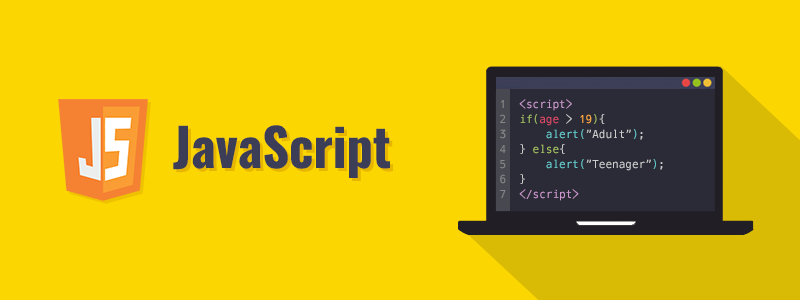

Que es JavaScript
JavaScript (abreviado comúnmente JS) es un lenguaje de programación interpretado, dialecto del estándar ECMAScript. Se define como orientado a objetos,3 basado en prototipos, imperativo, débilmente tipado y dinámico. Se utiliza principalmente en su forma del lado del cliente (client-side), implementado como parte de un navegador web permitiendo mejoras en la interfaz de usuario y páginas web dinámicas4 aunque existe una forma de JavaScript del lado del servidor (Server-side JavaScript o SSJS). Su uso en aplicaciones externas a la web, por ejemplo en documentos PDF, aplicaciones de escritorio (mayoritariamente widgets) es también significativo.
Historia
Nacimiento de JavaScript
JavaScript fue desarrollado originalmente por Brendan Eich de Netscape con el nombre de Mocha, el cual fue renombrado posteriormente a LiveScript, para finalmente quedar como JavaScript. El cambio de nombre coincidió aproximadamente con el momento en que Netscape agregó compatibilidad con la tecnología Java en su navegador web Netscape Navigator en la versión 2.002 en diciembre de 1995. La denominación produjo confusión, dando la impresión de que el lenguaje es una prolongación de Java, y se ha caracterizado por muchos como una estrategia de mercadotecnia de Netscape para obtener prestigio e innovar en el ámbito de los nuevos lenguajes de programación web.89 «JAVASCRIPT» es una marca registrada de Oracle Corporation.10 Es usada con licencia por los productos creados por Netscape Communications y entidades actuales como la Fundación Mozilla.1112

JavaScript en el lado servidor
Netscape introdujo una implementación de script del lado del servidor con Netscape Enterprise Server, lanzada en diciembre de 1994 (poco después del lanzamiento de JavaScript para navegadores web).1415 A partir de mediados de la década de los 2000, ha habido una proliferación de implementaciones de JavaScript para el lado servidor. Node.js es uno de los notables ejemplos de JavaScript en el lado del servidor, siendo usado en proyectos importantes.

Extensiones específicas del fabricante
JavaScript se encuentra oficialmente bajo la organización de Mozilla Foundation, y periódicamente se añaden nuevas características del lenguaje. Sin embargo, sólo algunos motores JavaScript son compatibles con estas características:
- Las propiedades get y set (también compatibles con WebKit, Opera,35 ActionScript y Rhino).36
- Cláusulas catch condicionales.
- Protocolo iterador adoptado de Python.
- Corrutinas también adoptadas de Python.
- Generación de listas y expresiones por comprensión también adoptado de Python.